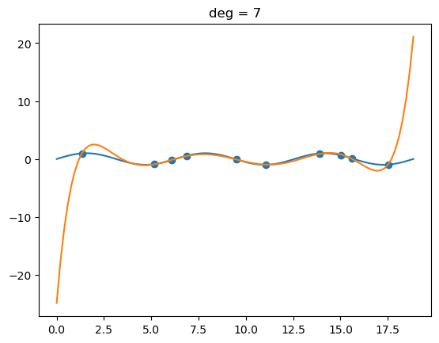
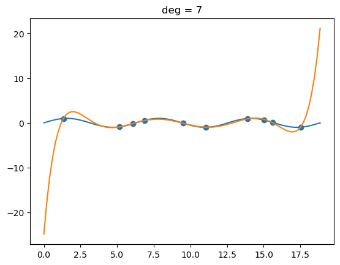

Lecture 2 Example – Linear regression analysis#
The data will be provided on the course website/cloud drive
You can redo the example together with another similar exercise after the class
Part I: Simple linear regression#
1, Load some basic python/ML libraries#
from __future__ import print_function, division
from builtins import range
# Note: you may need to update your version of future
# sudo pip install -U future
import numpy as np
import matplotlib.pyplot as plt
2, load the data and plot them#
# load the data
X = []
Y = []
for line in open('data_1d.csv'):
x, y = line.split(',')
X.append(float(x))
Y.append(float(y))
# let's turn X and Y into numpy arrays since that will be useful later
X = np.array(X)
Y = np.array(Y)
# let's plot the data to see what it looks like
plt.scatter(X, Y)
plt.show()
3, Do the linear regression analysis#
3.1, apply the equations we learned to calculate a and b
3.2, you can load the ML library sklearn to use already developed regression functions
# 3.1, use the provided regression formulas to estimate the coefficients for simple linear regression
# denominator is common
# note: this could be more efficient if
# we only computed the sums and means once
denominator = X.dot(X) - X.mean() * X.sum()
a = ( X.dot(Y) - Y.mean()*X.sum() ) / denominator
b = ( Y.mean() * X.dot(X) - X.mean() * X.dot(Y) ) / denominator
# let's calculate the predicted Y
Yhat = a*X + b
# let's plot everything together to make sure it worked
plt.scatter(X, Y)
plt.plot(X, Yhat)
plt.show()
# determine how good the model is by computing the r-squared
d1 = Y - Yhat
d2 = Y - Y.mean()
r2 = 1 - d1.dot(d1) / d2.dot(d2)
print("the r-squared is:", r2)
the r-squared is: 0.9911838202977805
# 3.2, use the sklearn library for linear regression
from sklearn.linear_model import LinearRegression
reg = LinearRegression()
x = np.expand_dims(X,1)
reg.fit(x, Y)
reg.score(x, Y)
# get to know the coefficients
a1 = reg.coef_
b1 = reg.intercept_
Yhat = a1 * X + b1
plt.scatter(X, Y)
plt.plot(X, Yhat)
plt.show()
Part II: Here we can demonstrate if a fitting/regression is under/over-fitted#
# notes for this course can be found at:
# https://deeplearningcourses.com/c/data-science-linear-regression-in-python
# https://www.udemy.com/data-science-linear-regression-in-python
from __future__ import print_function, division
from builtins import range
# Note: you may need to update your version of future
# sudo pip install -U future
import numpy as np
import matplotlib.pyplot as plt
def make_poly(X, deg):
n = len(X)
data = [np.ones(n)]
for d in range(deg):
data.append(X**(d+1))
return np.vstack(data).T
def fit(X, Y):
return np.linalg.solve(X.T.dot(X), X.T.dot(Y))
def fit_and_display(X, Y, sample, deg):
N = len(X)
train_idx = np.random.choice(N, sample)
Xtrain = X[train_idx]
Ytrain = Y[train_idx]
plt.scatter(Xtrain, Ytrain)
plt.show()
# fit polynomial
Xtrain_poly = make_poly(Xtrain, deg)
w = fit(Xtrain_poly, Ytrain)
# display the polynomial
X_poly = make_poly(X, deg)
Y_hat = X_poly.dot(w)
plt.plot(X, Y)
plt.plot(X, Y_hat)
plt.scatter(Xtrain, Ytrain)
plt.title("deg = %d" % deg)
plt.show()
def get_mse(Y, Yhat):
d = Y - Yhat
return d.dot(d) / len(d)
def plot_train_vs_test_curves(X, Y, sample=20, max_deg=20):
N = len(X)
train_idx = np.random.choice(N, sample)
Xtrain = X[train_idx]
Ytrain = Y[train_idx]
test_idx = [idx for idx in range(N) if idx not in train_idx]
# test_idx = np.random.choice(N, sample)
Xtest = X[test_idx]
Ytest = Y[test_idx]
mse_trains = []
mse_tests = []
for deg in range(max_deg+1):
Xtrain_poly = make_poly(Xtrain, deg)
w = fit(Xtrain_poly, Ytrain)
Yhat_train = Xtrain_poly.dot(w)
mse_train = get_mse(Ytrain, Yhat_train)
Xtest_poly = make_poly(Xtest, deg)
Yhat_test = Xtest_poly.dot(w)
mse_test = get_mse(Ytest, Yhat_test)
mse_trains.append(mse_train)
mse_tests.append(mse_test)
plt.plot(mse_trains, label="train mse")
plt.plot(mse_tests, label="test mse")
plt.legend()
plt.show()
plt.plot(mse_trains, label="train mse")
plt.legend()
plt.show()
if __name__ == "__main__":
# make up some data and plot it
N = 100
X = np.linspace(0, 6*np.pi, N)
Y = np.sin(X)
plt.plot(X, Y)
plt.show()
for deg in (5, 6, 7, 8, 9):
fit_and_display(X, Y, 10, deg)
plot_train_vs_test_curves(X, Y)
 
